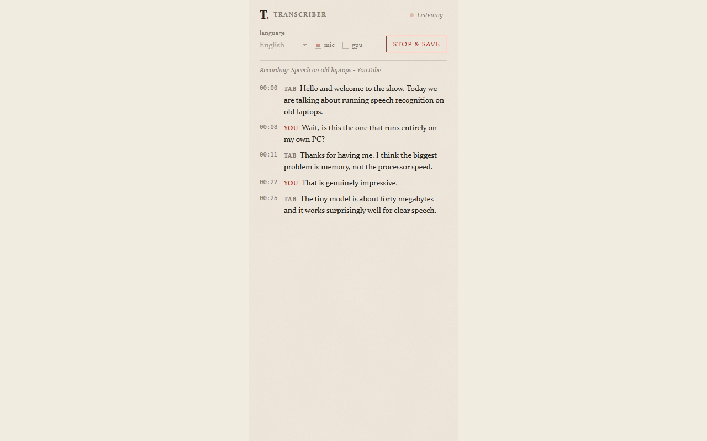

Six browser tools that run entirely on your own computer. Nothing you transcribe, translate, OCR, read, or paste is ever uploaded — anywhere.
Get G's Power Tools → Pay once on Gumroad, install from the Chrome Web Store, unlock with your key.

The transcriber's side panel — live captions while you browse, light and dark.
What's in the bundle
Live captions from any tab's audio, your mic, or both. Exports to .md, .srt, .vtt, .docx, .pdf. Optional GPU mode for better English accuracy.
Right-click any selected text, get a real translation back in under a second — safe for anything you can't put through a cloud translator.
Right-click any image, or drag-select part of your screen, and get real, copyable text out of it.
Right-click a page or selection and have it read to you, using the best voice already on your system.
Quietly warns you before you paste something sensitive into a website — including AI chat tools.
Drag a box over anything on the page before a screen share. A real, opaque mask — not a cosmetic effect.
Why "100% local" actually means it here
Every tool runs on-device using on-device models (Whisper/Moonshine for speech, opus-mt for translation, tesseract.js for OCR). The only network call anywhere in the extension is a one-time check to Gumroad to verify your license key when you unlock it — everything else, forever, stays on your machine.
No account, no telemetry, no crash reporting unless you opt in (and even then, it's an error message and a version number — never page content).
Full privacy policy: read it here.
Questions
Why pay for something that runs locally — what's the $25 for?
Building and maintaining six tools, picking and tuning the right models for CPU-only hardware, and keeping it working across Chrome updates. The one-time price keeps it sustainable without ads, telemetry, or a subscription.
Does it work offline?
Yes, after the first use of each tool (which downloads that tool's model once and caches it). OCR ships fully bundled, so it needs no download at all.
Which browsers does it support?
Chrome, Brave, Edge, and any other Chromium-based browser that supports Manifest V3 extensions.
Is the accuracy actually good?
The transcriber uses Moonshine/Whisper (the same families used by much more expensive tools), with an optional GPU tier for a further accuracy bump on English. Translation uses per-language opus-mt models, not a generic lightweight model.
Can I get a refund?
Yes — Gumroad handles the purchase and supports refunds through their normal process.